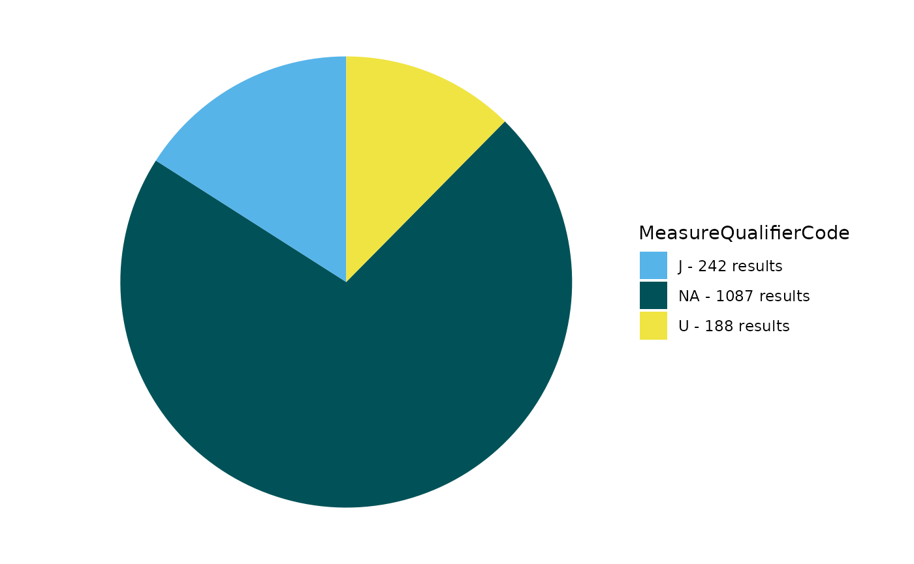
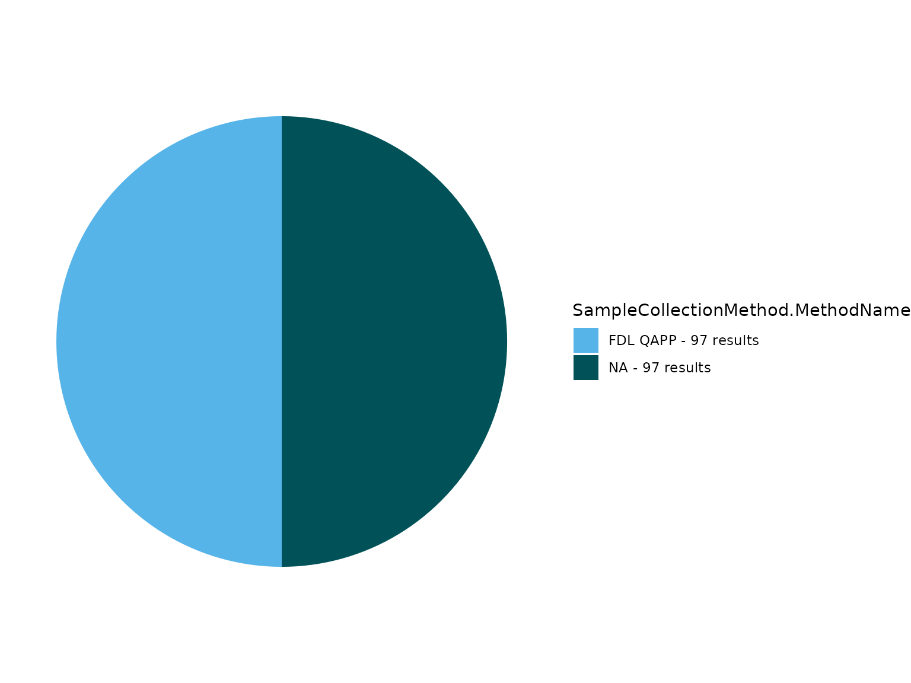

TADA Module 1: Water Quality Portal Data Discovery and Cleaning
TADA Team
2025-03-18
Source:vignettes/TADAModule1.Rmd
TADAModule1.RmdOverview
This vignette walks through how to use the TADA R Package to discover and clean (i.e., wrangle, Quality Assure and Quality Control (QAQC), and harmonize) Water Quality Portal (WQP) data from multiple organizations.
Install and load packages
First, install and load the remotes package specifying the repo. This is needed before installing EPATADA because it is only available on GitHub (not CRAN).
install.packages("remotes",
repos = "http://cran.us.r-project.org"
)
library(remotes)Next, install and load EPATADA using the remotes package. USGS’s dataRetrieval and other TADA R Package dependencies will also be downloaded automatically from CRAN with the TADA install. If desired, the development version of dataRetrieval can be downloaded directly from GitHub (un-comment).
remotes::install_github("USEPA/EPATADA",
ref = "develop",
dependencies = TRUE
)
# remotes::install_github("USGS-R/dataRetrieval", dependencies=TRUE)Finally, use the library() function to load the TADA R Package into your R session.
TADA_DataRetrieval
WQP data is retrieved and processed for compatibility with TADA. This function, TADA_DataRetrieval, builds on USGS’s dataRetrieval R package functions. It joins three WQP profiles: Site, Sample Results (physical/chemical metadata), and Project. In addition, it changes all data in the Characteristic, Speciation, Fraction, and Unit fields to uppercase and addresses result values that include special characters.
This function accepts the same inputs as the dataRetrieval
readWQPdata function. readWQPdata does not
restrict the characteristics pulled from Water Quality Portal
(WQP).
Data retrieval filters include:
startDate
endDate
characteristicName
sampleMedia
siteType
statecode (see list of possible state and territory abbreviations here)
countycode
siteid
organization
project
huc
characteristicType
providers
In addition to these filters, TADA_DataRetrieval accepts additional
geospatial-related filters that are not included in the dataRetrieval
readWQPdata function:
aoi_sf
tribal_area_type
tribe_name_parcel (Note: The TADA_TribalOptions function can be used to narrow down options for use with this tribe_name_parcel filter option. See ?TADA_TribalOptions for more info).
After data is downloaded using the filters above, the default TADA_DataRetrieval function also automatically runs the TADA_AutoClean function. If desired, users can set applyautoclean = FALSE in their TADA_DataRetrieval calls. In this example, we will set applyautoclean = FALSE and run it as a separate step in the workflow.
Tips:
-
All the query filters for the WQP work as an AND but within the fields there are ORs. For example:
Characteristics: If you choose pH & DO - it’s an OR. This means you will retrieve both pH OR DO data if available.
States: Similarly, if you choose VA and IL, it’s an OR. This means you will retrieve both VA OR IL data if available.
Combinations of fields are ANDs, such as State/VA AND Characteristic/DO”. This means you will receive all DO data available in VA.
“Characteristic” and “Characteristic Type” also work as an AND. This means that the Characteristic must fall within the CharacteristicGroup if both filters are being used, if not you will get an error.
The “siteid” is a general term WQP uses to describe both Site IDs from USGS databases and Monitoring Location Identifiers (from WQX). Each monitoring location in the Water Quality Portal (WQP) has a unique Monitoring Location Identifier, regardless of the database from which it derives. The Monitoring Location Identifier from the WQP is the concatenated Organization Identifier plus the Site ID number. Site IDs that only include a number are only unique identifiers for monitoring locations within USGS NWIS or EPA’s WQX databases separately.
The aoi_sf and tribal arguments are meant to be used on their own. For example, if both an aoi_sf argument and tribal information are provided an error is returned because it’s unclear what the priority location should be for the query. Similarly, aoi_sf and tribal_area_type are not meant to be used with location-related filters (e.g., statecode, siteid). In these instances a warning is returned but the query proceeds by using only the aoi_sf or tribal_area_type information.
Additional resources:
Review function documentation by entering the following code into the console: ?TADA_DataRetrieval
Use the code below to download data from the WQP using TADA_DataRetrieval. Edit the code chunk below to define your own WQP query inputs.
Downloads using TADA_DataRetrieval will have the same columns each time, but be aware that data are uploaded to the Water Quality Portal by individual organizations, which may or may not follow the same conventions. Data and metadata quality are not guaranteed! Carefully explore data to make sure it meets your quality assurance requirements.
Note: TADA_DataRetrieval (by leveraging dataRetrieval), automatically converts the date times to UTC. It also automatically converts field formats to dates, datetimes, and numerics based on a standard algorithm.
Enter ?TADA_DataRetrieval into the console to review example queries and additional information.
This example includes monitoring data collected from Jan 2018 to Jan 2019 by six organizations: 1) Red Lake Band of Chippewa Indians, 2) Sac & Fox Nation, 3) Pueblo of Pojoaque, 4) Minnesota Chippewa Tribe (Fond du Lac Band), 5) Pueblo of Tesuque, and 6) The Chickasaw Nation.
TADAProfile <- TADA_DataRetrieval(organization = c("REDLAKE_WQX", "SFNOES_WQX", "PUEBLO_POJOAQUE", "FONDULAC_WQX", "PUEBLOOFTESUQUE", "CNENVSER"), startDate = "2018-01-01", endDate = "2019-01-01", applyautoclean = FALSE, ask = FALSE)## [1] "Downloading WQP query results. This may take some time depending upon the query size."
## $startDate
## [1] "2018-01-01"
##
## $organization
## [1] "REDLAKE_WQX" "SFNOES_WQX" "PUEBLO_POJOAQUE" "FONDULAC_WQX"
## [5] "PUEBLOOFTESUQUE" "CNENVSER"
##
## $endDate
## [1] "2019-01-01"We will move forward with this example in the remainder of the vignette.
We will first use a subset of this example to demonstrate using new TADA_DataRetrieval options that allow for spatial or tribe-specific queries:
Focusing just on the “PUEBLO_POJOAQUE” organization, rerun the example above:
TADAProfile_single <- TADA_DataRetrieval(
organization = "PUEBLO_POJOAQUE",
startDate = "2018-01-01",
endDate = "2019-01-01",
applyautoclean = FALSE,
ask = FALSE
)## [1] "Downloading WQP query results. This may take some time depending upon the query size."
## $startDate
## [1] "2018-01-01"
##
## $organization
## [1] "PUEBLO_POJOAQUE"
##
## $endDate
## [1] "2019-01-01"The same results can now be obtained using a combination of the tribal_area_type and tribe_name_parcel arguments. Both must be used together. The tribal_area_type argument indicates which one of four layer datasets (“Alaska Native Allotments”, “American Indian Reservations”, “Off-reservation Trust Lands”, or “Oklahoma Tribal Statistical Areas”) of tribal land data to query within. Note that “Alaska Native Villages” and “Virginia Federally Recognized Tribes” layers will not return a successful query. These four tribal_area_type layer options include multiple tribes. Therefore, tribe_name_parcel is where users can enter the specific name of the tribal land of interest as listed in the layer. In this example for Pueblo of Pojoaque, running TADA_TribalOptions(“American Indian Reservations”) could be used here to determine the correct spelling for this argument, “Pueblo of Pojoaque, New Mexico”, as listed in the TRIBE_NAME column.
# Review TRIBE_NAME column to get name format for the TADA_DataRetrieval tribe_name_parcel function input
TRIBE_NAME <- TADA_TribalOptions("American Indian Reservations")
TADAProfile_tribal <- TADA_DataRetrieval(
tribal_area_type = "American Indian Reservations",
tribe_name_parcel = "Pueblo of Pojoaque, New Mexico",
startDate = "2018-01-01",
endDate = "2019-01-01",
applyautoclean = FALSE,
ask = FALSE
)
# They are equivalent:
all.equal(data.frame(TADAProfile_single), data.frame(TADAProfile_tribal))Additionally, the aoi_sf argument can be used to provide an sf spatial object as a query filter. We can match the output of the two short Pueblo of Pojoaque examples above, using tigris::native_areas to acquire Census Bureau spatial data:
TADAProfile_spatial <- TADA_DataRetrieval(
aoi_sf = tigris::native_areas() %>% dplyr::filter(NAMELSAD == "Pueblo of Pojoaque"),
startDate = "2018-01-01",
endDate = "2019-01-01",
applyautoclean = FALSE,
ask = FALSE
)
all.equal(data.frame(TADAProfile_single), data.frame(TADAProfile_spatial))Note: In this example the output data is identical from these three input methods. However, in some instances this may not be the case. This is because the tribal_area_type method is based on spatial data and so spatial boundaries must be taken into account when comparing query results. The same applies when using aoi_sf results.
Let’s repeat this process for Red Lake Band of Chippewa Indians. In this case, we will get additional observations from other organizations who are sampling with the tribal boundary. This is one great benefit of this query option! There is additional data available that may be useful but is missed if only the organization query filter is used.
TADAProfile_single_2 <- TADA_DataRetrieval(
organization = "REDLAKE_WQX",
startDate = "2018-01-01",
endDate = "2019-01-01",
applyautoclean = FALSE,
ask = FALSE
)
TADAProfile_tribal_2 <- TADA_DataRetrieval(
tribal_area_type = "American Indian Reservations",
tribe_name_parcel = "Red Lake Band of Chippewa Indians, Minnesota",
startDate = "2018-01-01",
endDate = "2019-01-01",
applyautoclean = FALSE,
ask = FALSE
)
# Review unique organizations
unique(TADAProfile_single_2$OrganizationFormalName)
unique(TADAProfile_tribal_2$OrganizationFormalName)USGS dataRetrieval
Uncomment below (optional) if you would like to review differences between the profiles you would get using USGS’s readWQPdata vs. EPA’s TADA_DataRetrieval (compare dataRetrieval_example to TADAProfile). The profiles are different because TADA_DataRetrieval automatically joins in data from multiple WQP profiles, and does some additional data cleaning as part of the data retrieval process.
# dataRetrieval_example <- dataRetrieval::readWQPdata(organization = c("REDLAKE_WQX", "SFNOES_WQX", "PUEBLO_POJOAQUE", "FONDULAC_WQX", "PUEBLOOFTESUQUE", "CNENVSER"), startDate = "2018-01-01", endDate = "2019-01-01", ignore_attributes = TRUE)Big Data Queries
If you need to download a large amount of data from across a large area, the TADA_DataRetrieval function now handles this automatically. Whereas in the past there was a second function (TADA_BigDataRetrieval) to do this, the standard TADA_DataRetrieval function now checks the number of results in each query and uses similar methods as TADA_BigDataRetrieval when necessary.
The function does multiple synchronous data calls to the WQP (waterqualitydata.us). It uses the WQP summary service to limit the sites downloaded to only those with relevant data. It pulls back data from set number of stations at a time and then joins the data back together to produce a single TADA compatible dataframe as the output.
Users can leverage the new maxrecs function input for TADA_DataRetrieval to specify the maximum number of records to query at once (i.e., without breaking into smaller queries). The default is 250000 records.
TADA_DataRetrieval now also prompts the user (when ask = TRUE) to confirm that they want to download the dataset. As part of this prompt the expected number of rows of data are provided to help in making the decision. As the downloads occur, a progress bar is shown as well.
See ?TADA_DataRetrieval for more details. WARNING, some of the examples below can take multiple HOURS to run. The total run time depends on your query inputs.
# AK_AL_WaterTemp <- TADA_DataRetrieval(startDate = "2000-01-01", endDate = "2022-12-31", characteristicName = "Temperature, water", statecode = c("AK","AL"))
#
# AllWaterTemp <- TADA_DataRetrieval(characteristicName = "Temperature, water")
#
# AllPhosphorus <- TADA_DataRetrieval(characteristicName = "Phosphorus")
#
# AllCT <- TADA_DataRetrieval(statecode = "CT")Filter data based on media type
Some TADA users are interested in using WQP data for surface water only or for analysis of some non-water data. The TADA_AnalysisDataFilter function can assist in identifying results of interest. Multiple columns are used to identify groundwater results as different organizations may populate different combinations of fields in order to identify a result as groundwater.
This function identifies surface water, groundwater, and sediment results. Users can specify whether all results should be returned with a new column, TADA.UseForAnalysis.Flag,identifying if the result should be included in further analysis or if only results that should be in included are returned.
The defaults are to include surface water, exclude groundwater and sediment, and to return only the results that should be used for analysis (clean = TRUE). This is shown in the active example below. If you would like to see all results with the TADA.UseForAnalysis.Flag column, you can uncomment the example where clean = FALSE.
If you are not interested in using TADA_AnalysisDataFilter, but would like to filter by activity media, uncomment the example to filter for water data only by using dplyr::filter() with TADA.ActivityMediaName.
# Filter to retain only results for use in analysis
TADAProfile <- TADA_AnalysisDataFilter(TADAProfile,
clean = TRUE,
surface_water = TRUE,
ground_water = FALSE,
sediment = FALSE
)## [1] "TADA_AnalysisDataFilter: Identifying groundwater results."
## [1] "TADA_AnalysisDataFilter: Flagging surface water results to include in assessments."
## [1] "TADA_AnalysisDataFilter: Flagging groundwater results to exclude from assessments."
## [1] "TADA_AnalysisDataFilter: Flagging sediment results to exclude from assessments."
## [1] "TADA_AnalysisDataFilter: Removing results flagged for exclusion from assessments."
# Add TADA.UseForAnalysis.Flag column to identify which results should be used for analysis
# TADAProfile <- TADA_AnalysisDataFilter(TADAProfile, clean = FALSE)
# Remove data for non-water media types, alternate workflow without using TADA_AnalysisDataFilter()
# TADAProfile <- dplyr::filter(TADAProfile, TADA.ActivityMediaName == "WATER")TADA_AutoClean
Now TADA_AutoClean can be run on a smaller dataset after unnecessary results have been removed. It performs the following functions on the data retrieved from the WQP:
TADA_ConvertSpecialChars - converts result value columns to numeric and flags non-numeric values that could not be converted.
TADA_ConvertResultUnits - unifies result units for easier quality control and review
TADA_ConvertDepthUnits - converts depth units to a consistent unit (meters).
TADA_IDCensoredData - categorizes detection limit data and identifies mismatches in result detection condition and result detection limit type.
Other helpful actions - converts important text columns to all upper-case letters, removes exact duplicates, and uses WQX format rules to harmonize specific NWIS metadata conventions (e.g. move characteristic speciation from the TADA.ResultMeasure.MeasureUnitCode column to the TADA.MethodSpeciationName column)
As a general rule, TADA functions do not change any contents in the WQP-served columns. Instead, they add new columns with the prefix “TADA.” The following columns are numeric versions of their WQP origins:
- TADA.ResultMeasureValue
- TADA.DetectionQuantitationLimitMeasure.MeasureValue
- TADA.LatitudeMeasure
- TADA.LongitudeMeasureThese functions also add the columns TADA.ResultMeasureValueDataTypes.Flag and TADA.DetectionQuantitationLimitMeasure.MeasureValueDataTypes.Flag, which provide information about the result values that is needed to address censored data later on (i.e., nondetections). Specifically, these new columns flag if special characters are included in result values, and specifies what the special characters are.
# run TADA_AutoClean on filtered dataset to convert special characters, result units, and depth units and identify censored data.
TADAProfile <- TADA_AutoClean(TADAProfile)## [1] "TADA_Autoclean: creating TADA-specific columns."
## [1] "TADA_Autoclean: harmonizing dissolved oxygen characterisic name to DISSOLVED OXYGEN SATURATION if unit is % or % SATURATN."
## [1] "TADA_Autoclean: handling special characters and coverting TADA.ResultMeasureValue and TADA.DetectionQuantitationLimitMeasure.MeasureValue value fields to numeric."
## [1] "TADA_Autoclean: converting TADA.LatitudeMeasure and TADA.LongitudeMeasure fields to numeric."
## [1] "TADA_Autoclean: harmonizing synonymous unit names (m and meters) to m."
## [1] "TADA_Autoclean: updating deprecated (i.e. retired) characteristic names."
## [1] "8 results in your dataset have one of the following deprecated characteristic names: Inorganic nitrogen (nitrate and nitrite) ***retired***use Nitrate + Nitrite. These names have been substituted with the updated preferred names in the TADA.CharacteristicName field."
## [1] "TADA_Autoclean: harmonizing result and depth units."
## [1] "TADA_Autoclean: creating TADA.ComparableDataIdentifier field for use when generating visualizations and analyses."
## [1] "NOTE: This version of the TADA package is designed to work with numeric data with media name: 'WATER'. TADA_AutoClean does not currently remove (filter) data with non-water media types. If desired, the user must make this specification on their own outside of package functions. Example: dplyr::filter(.data, TADA.ActivityMediaName == 'WATER')"Review all column names in the TADA Profile to familiarize yourself with the dataset after TADA_AutoClean has added additional TADA prefixed columns. TADA_SummarizeColumn summarizes the data set based on the user specified column and returns a dataframe displaying the number of sites and number of records for each unique value in the specified column. The example below uses TADA.CharacteristicName.
# View column names for TADAProfile
colnames(TADAProfile)## [1] "ActivityTypeCode"
## [2] "ActivityMediaName"
## [3] "TADA.ActivityMediaName"
## [4] "ActivityMediaSubdivisionName"
## [5] "ResultSampleFractionText"
## [6] "TADA.ResultSampleFractionText"
## [7] "CharacteristicName"
## [8] "TADA.CharacteristicName"
## [9] "SubjectTaxonomicName"
## [10] "SampleTissueAnatomyName"
## [11] "MethodSpeciationName"
## [12] "TADA.MethodSpeciationName"
## [13] "TADA.ComparableDataIdentifier"
## [14] "ActivityStartDate"
## [15] "ActivityStartTime.Time"
## [16] "ActivityStartTime.TimeZoneCode"
## [17] "ActivityStartDateTime"
## [18] "ResultMeasureValue"
## [19] "ResultMeasure.MeasureUnitCode"
## [20] "TADA.ResultMeasureValue"
## [21] "TADA.ResultMeasure.MeasureUnitCode"
## [22] "TADA.WQXResultUnitConversion"
## [23] "ResultValueTypeName"
## [24] "TADA.ResultMeasureValueDataTypes.Flag"
## [25] "ResultDetectionConditionText"
## [26] "DetectionQuantitationLimitTypeName"
## [27] "DetectionQuantitationLimitMeasure.MeasureValue"
## [28] "DetectionQuantitationLimitMeasure.MeasureUnitCode"
## [29] "TADA.DetectionQuantitationLimitMeasure.MeasureValue"
## [30] "TADA.DetectionQuantitationLimitMeasure.MeasureUnitCode"
## [31] "TADA.DetectionQuantitationLimitMeasure.MeasureValueDataTypes.Flag"
## [32] "ResultDepthHeightMeasure.MeasureValue"
## [33] "TADA.ResultDepthHeightMeasure.MeasureValue"
## [34] "TADA.ResultDepthHeightMeasure.MeasureValueDataTypes.Flag"
## [35] "ResultDepthHeightMeasure.MeasureUnitCode"
## [36] "TADA.ResultDepthHeightMeasure.MeasureUnitCode"
## [37] "ResultDepthAltitudeReferencePointText"
## [38] "ActivityRelativeDepthName"
## [39] "ActivityDepthHeightMeasure.MeasureValue"
## [40] "TADA.ActivityDepthHeightMeasure.MeasureValue"
## [41] "TADA.ActivityDepthHeightMeasure.MeasureValueDataTypes.Flag"
## [42] "ActivityDepthHeightMeasure.MeasureUnitCode"
## [43] "TADA.ActivityDepthHeightMeasure.MeasureUnitCode"
## [44] "ActivityTopDepthHeightMeasure.MeasureValue"
## [45] "TADA.ActivityTopDepthHeightMeasure.MeasureValue"
## [46] "TADA.ActivityTopDepthHeightMeasure.MeasureValueDataTypes.Flag"
## [47] "ActivityTopDepthHeightMeasure.MeasureUnitCode"
## [48] "TADA.ActivityTopDepthHeightMeasure.MeasureUnitCode"
## [49] "ActivityBottomDepthHeightMeasure.MeasureValue"
## [50] "TADA.ActivityBottomDepthHeightMeasure.MeasureValue"
## [51] "TADA.ActivityBottomDepthHeightMeasure.MeasureValueDataTypes.Flag"
## [52] "ActivityBottomDepthHeightMeasure.MeasureUnitCode"
## [53] "TADA.ActivityBottomDepthHeightMeasure.MeasureUnitCode"
## [54] "ResultTimeBasisText"
## [55] "StatisticalBaseCode"
## [56] "ResultFileUrl"
## [57] "ResultAnalyticalMethod.MethodName"
## [58] "ResultAnalyticalMethod.MethodDescriptionText"
## [59] "ResultAnalyticalMethod.MethodIdentifier"
## [60] "ResultAnalyticalMethod.MethodIdentifierContext"
## [61] "ResultAnalyticalMethod.MethodUrl"
## [62] "SampleCollectionMethod.MethodIdentifier"
## [63] "SampleCollectionMethod.MethodIdentifierContext"
## [64] "SampleCollectionMethod.MethodName"
## [65] "SampleCollectionMethod.MethodDescriptionText"
## [66] "SampleCollectionEquipmentName"
## [67] "MeasureQualifierCode"
## [68] "ResultStatusIdentifier"
## [69] "ResultCommentText"
## [70] "ActivityCommentText"
## [71] "HydrologicCondition"
## [72] "HydrologicEvent"
## [73] "DataQuality.PrecisionValue"
## [74] "DataQuality.BiasValue"
## [75] "DataQuality.ConfidenceIntervalValue"
## [76] "DataQuality.UpperConfidenceLimitValue"
## [77] "DataQuality.LowerConfidenceLimitValue"
## [78] "SamplingDesignTypeCode"
## [79] "LaboratoryName"
## [80] "ResultLaboratoryCommentText"
## [81] "ResultIdentifier"
## [82] "ActivityIdentifier"
## [83] "OrganizationIdentifier"
## [84] "OrganizationFormalName"
## [85] "ProjectName"
## [86] "ProjectDescriptionText"
## [87] "ProjectIdentifier"
## [88] "ProjectFileUrl"
## [89] "QAPPApprovedIndicator"
## [90] "QAPPApprovalAgencyName"
## [91] "CountryCode"
## [92] "StateCode"
## [93] "CountyCode"
## [94] "MonitoringLocationName"
## [95] "TADA.MonitoringLocationName"
## [96] "MonitoringLocationTypeName"
## [97] "TADA.MonitoringLocationTypeName"
## [98] "MonitoringLocationDescriptionText"
## [99] "LatitudeMeasure"
## [100] "TADA.LatitudeMeasure"
## [101] "LongitudeMeasure"
## [102] "TADA.LongitudeMeasure"
## [103] "HorizontalCoordinateReferenceSystemDatumName"
## [104] "HUCEightDigitCode"
## [105] "MonitoringLocationIdentifier"
## [106] "TADA.MonitoringLocationIdentifier"
## [107] "AquiferName"
## [108] "AquiferTypeName"
## [109] "LocalAqfrName"
## [110] "ConstructionDateText"
## [111] "WellDepthMeasure.MeasureValue"
## [112] "WellDepthMeasure.MeasureUnitCode"
## [113] "WellHoleDepthMeasure.MeasureValue"
## [114] "WellHoleDepthMeasure.MeasureUnitCode"
## [115] "ActivityDepthAltitudeReferencePointText"
## [116] "ActivityEndDate"
## [117] "ActivityEndTime.Time"
## [118] "ActivityEndTime.TimeZoneCode"
## [119] "ActivityEndDateTime"
## [120] "ActivityConductingOrganizationText"
## [121] "SampleAquifer"
## [122] "ActivityLocation.LatitudeMeasure"
## [123] "ActivityLocation.LongitudeMeasure"
## [124] "ResultWeightBasisText"
## [125] "ResultTemperatureBasisText"
## [126] "ResultParticleSizeBasisText"
## [127] "USGSPCode"
## [128] "BinaryObjectFileName"
## [129] "BinaryObjectFileTypeCode"
## [130] "AnalysisStartDate"
## [131] "ResultDetectionQuantitationLimitUrl"
## [132] "LabSamplePreparationUrl"
## [133] "ActivityStartTime.TimeZoneCode_offset"
## [134] "ActivityEndTime.TimeZoneCode_offset"
## [135] "SourceMapScaleNumeric"
## [136] "HorizontalAccuracyMeasure.MeasureValue"
## [137] "HorizontalAccuracyMeasure.MeasureUnitCode"
## [138] "HorizontalCollectionMethodName"
## [139] "VerticalMeasure.MeasureValue"
## [140] "VerticalMeasure.MeasureUnitCode"
## [141] "VerticalAccuracyMeasure.MeasureValue"
## [142] "VerticalAccuracyMeasure.MeasureUnitCode"
## [143] "VerticalCollectionMethodName"
## [144] "VerticalCoordinateReferenceSystemDatumName"
## [145] "FormationTypeText"
## [146] "ProjectMonitoringLocationWeightingUrl"
## [147] "DrainageAreaMeasure.MeasureValue"
## [148] "DrainageAreaMeasure.MeasureUnitCode"
## [149] "ContributingDrainageAreaMeasure.MeasureValue"
## [150] "ContributingDrainageAreaMeasure.MeasureUnitCode"
## [151] "ProviderName"
## [152] "LastUpdated"
# Review the number of sites and number of records for each CharacteristicName in TADAProfile
TADAProfile_CharSummary <- TADA_SummarizeColumn(TADAProfile, "TADA.CharacteristicName")
# View TADAProfile_CharSummary
TADAProfile_CharSummary## # A tibble: 37 × 3
## TADA.CharacteristicName n_sites n_records
## <chr> <int> <int>
## 1 ALKALINITY, TOTAL 39 106
## 2 AMMONIA-NITROGEN 39 104
## 3 APPARENT COLOR 39 106
## 4 ARSENIC 31 31
## 5 CADMIUM 31 31
## 6 CHLORIDE 31 31
## 7 CHLOROPHYLL A 21 49
## 8 CHROMIUM 31 31
## 9 CONDITION CLASS (DISSOLVED OXYGEN (DO)) 20 97
## 10 COPPER 31 31
## # ℹ 27 more rowsInvalid coordinates
Review station locations and summary information using the TADA_OverviewMap function. TADA_OverviewMap counts the number of unique results, characteristics, and organizations at each monitoring location in the dataset and creates a tidy map for reviewing summary stats spatially. Larger point sizes indicate more results collected at a given site, while darker blue colors indicate more unique characteristics collected at the site. Users may click on a site to view a pop-up with this summary information, including the number of organizations that reported results at that site. This map may inform a user’s decision to remove/correct sites that are outside the US.
TADA_OverviewMap(TADAProfile)The TADA TADA_FlagCoordinates function identifies and flags potentially invalid coordinate data. While its functionality is showcased here, it is always important to review any invalid outputs before cleaning to reduce the risk of leaving out usable data/sites.
Allowable values for clean_outsideUSA are “no”, “remove”, or “change sign”. The default is “no” which flags latitude and longitude coordinates outside the USA. Assigning clean_ousideUSA = “remove” will remove rows of data with coordinates outside the USA. And assigning clean_outsideUSA = “change sign” will flip the sign of latitude or longitude coordinates flagged as outside the USA. The “change sign” option should only be used when it is known that coordinates were entered with the wrong sign in WQX; additionally, the data owner should fix these incorrect coordinates in the raw data through the WQX - for assistance email the WQX help desk: WQX@epa.gov
Allowable values for clean_imprecise are TRUE or FALSE. The default is FALSE which flags rows of data with invalid or imprecise coordinates without removing them. Assigning clean_imprecise = TRUE will remove rows of data with invalid or imprecise coordinates.
Allowable values for flaggedonly are TRUE or FALSE. The default is FALSE which keeps all rows of data regardless of flag status. Assigning flaggedonly = TRUE filters the dataframe to show only rows of data which are flagged.
When clean_outsideUSA = “no” and/or clean_imprecise = FALSE, a column will be appended titled “TADA.InvalidCoordinates.Flag” with the following flags (if relevant to dataframe):
If the latitude is less than zero, the row will be flagged with “LAT_OutsideUSA”. (Exception for American Samoa)
If the longitude is greater than zero AND less than 145, the row will be flagged as “LONG_OutsideUSA”. (Exceptions for Guam and the Northern Mariana Islands)
If the latitude or longitude contains the string, “999”, the row will be flagged as invalid.
Finally, precision can be measured by the number of decimal places in the latitude and longitude provided. If either does not have any numbers to the right of the decimal point, the row will be flagged as “Imprecise”.
# flag only
TADAProfileClean1 <- TADA_FlagCoordinates(TADAProfile, clean_outsideUSA = "no", clean_imprecise = FALSE, flaggedonly = FALSE)
# review unique flags in TADAProfileClean1
unique(TADAProfileClean1$TADA.SuspectCoordinates.Flag)
# review unique MonitoringLocationIdentifiers in your flag dataframe
unique(TADAProfileClean1$MonitoringLocationIdentifier)
Unique_SuspectCoordinateFlags <- TADAProfileClean1 %>%
dplyr::select(
"MonitoringLocationIdentifier",
"MonitoringLocationName",
"TADA.SuspectCoordinates.Flag",
"OrganizationIdentifier",
"TADA.LongitudeMeasure",
"TADA.LatitudeMeasure",
"MonitoringLocationTypeName",
"CountryCode",
"StateCode",
"CountyCode",
"HUCEightDigitCode",
"MonitoringLocationDescriptionText",
"ProjectName",
"ProjectIdentifier",
"OrganizationFormalName"
) %>%
dplyr::distinct()
Unique_SuspectCoordinateFlags
# if needed, un-comment below to change the sign for all data for sites flagged as outside the USA. You can also change FALSE to TRUE if you want to remove sites outside of the US or sites with imprecise lat/longs
# TADAProfileClean1 <- TADA_FlagCoordinates(TADAProfile, clean_outsideUSA = "change sign", clean_imprecise = FALSE, flaggedonly = FALSE)Depth unit conversions
The TADA_ConvertDepthUnits function converts depth units to a consistent unit. Depth values and units are most commonly associated with lake data, and are populated in the ActivityDepthHeightMeasure, ActivityTopDepthHeightMeasure, ActivityBottomDepthHeightMeasure, and ResultDepthHeightMeasure Result Value/Unit columns.
Allowable values for ‘unit’ are either ‘m’ (meter), ‘ft’ (feet), or ‘in’ (inch). ‘unit’ accepts only one allowable value as an input. Default is unit = “m”.
Note that upon download using TADA_DataRetrieval, all depth columns are converted to meters by default. However, the user may choose to run the TADA_ConvertDepthUnits function on their dataset to convert to another unit. See function documentation for additional input options by entering the following code in the console: ?TADA_ConvertDepthUnits
# converts all depth profile data to meters
TADAProfileClean1 <- TADA_ConvertDepthUnits(TADAProfileClean1,
unit = "ft",
transform = TRUE
)Continuous (time series) data
Continuous data may (or may not) be suitable for integration with discrete water quality data for analyses. Therefore, the TADA_FlagContinuousData function was developed to flag rows with continuous data.
See function documentation for additional details by entering the following code in the console: ?TADA_FlagContinuousData
TADAProfileClean1 <- TADA_FlagContinuousData(TADAProfileClean1,
clean = FALSE,
flaggedonly = FALSE,
time_difference = 4
)
# uncomment below to create a dataframe of only the continuous data
# TADAProfile_onlycont <- TADA_FlagContinuousData(TADAProfileClean1, clean = FALSE, flaggedonly = TRUE, time_difference = 4)WQX Quality Assurance and Quality Control (QAQC) Service Result Flags
Run the following result functions to address suspect method, fraction, speciation, and unit metadata by characteristic. The default is clean = TRUE, which will remove suspect results. You can change this to clean = FALSE to flag results, but not remove them.
See documentation for more details:
-
?TADA_FlagMethod
When clean = FALSE, this function adds the following column to your dataframe: TADA.AnalyticalMethod.Flag. This column flags invalid TADA.CharacteristicName, ResultAnalyticalMethod/MethodIdentifier, and ResultAnalyticalMethod/MethodIdentifierContext combinations in your dataframe either “NonStandardized”, “Suspect”, or “Pass”.
When clean = TRUE, “Suspect” rows are removed from the dataframe and no column will be appended.
When flaggedonly = TRUE, the dataframe is filtered to only the rows flagged as “Suspect”; default is flaggedonly = FALSE.
-
?TADA_FlagSpeciation
-
When clean = “none”, this function adds the following column to your dataframe: TADA.MethodSpeciation.Flag. This column flags each TADA.CharacteristicName and MethodSpeciationName combination in your dataframe as either “NonStandardized”,
“Suspect”, or “Pass”.
When clean = “suspect_only”, only “Suspect” rows are removed from the dataframe. Default is clean = “suspect_only”.
When clean = “nonstandardized_only”, only “NonStandardized” rows are removed from the dataframe.
When clean = “both”, “Invalid” and “NonStandardized” rows are removed from the dataframe.
When clean = “none”, no rows are removed from the dataframe.
When flaggedonly = TRUE, the dataframe is filtered to only the rows flagged as “Suspect” or “NonStandardized”; default is flaggedonly = FALSE.
-
-
?TADA_FlagResultUnit
When clean = FALSE, the following column will be added to your dataframe: TADA.ResultUnit.Flag. This column flags each TADA.CharacteristicName, TADA.ActivityMediaName, and TADA.ResultMeasure.MeasureUnitCode combination in your dataframe as either “NonStandardized”, “Invalid”, or “Valid”.
When clean = TRUE, “Suspect” rows are removed from the dataframe and no column will be appended.
When flaggedonly = TRUE, the dataframe is filtered to only the rows flagged as “Suspect”; default is flaggedonly = FALSE.
-
?TADA_FlagFraction
- When clean = FALSE, this function adds the following column to your dataframe: TADA.SampleFraction.Flag. This column flags each TADA.CharacteristicName and TADA.ResultSampleFractionText combination in your dataframe as either “NonStandardized”, “Suspect”, or “Pass”.
- When clean = TRUE, “Suspect” rows are removed from the dataframe and no column will be appended.
- When flaggedonly = TRUE, the dataframe is filtered to only the rows flagged as “Suspect”; default is flaggedonly = FALSE.
TADAProfileClean2 <- TADA_FlagMethod(TADAProfileClean1, clean = TRUE)
TADAProfileClean2 <- TADA_FlagFraction(TADAProfileClean2, clean = TRUE)
TADAProfileClean2 <- TADA_FlagSpeciation(TADAProfileClean2, clean = "suspect_only")
TADAProfileClean2 <- TADA_FlagResultUnit(TADAProfileClean2, clean = "suspect_only")WQX national upper and lower thresholds
Run the following code to flag or remove results that are above or below the national upper and lower bound for each characteristic and unit combination. See documentation for more details:
-
?TADA_FlagAboveThreshold
When clean = FALSE, the following column is added to your dataframe: TADA.ResultValueAboveUpperThreshold.Flag. This column flags rows with data that are above the upper WQX threshold. The default is clean = FALSE.
When clean = TRUE, data that is above the upper WQX threshold is removed from the dataframe.
When flaggedonly = TRUE, the dataframe is filtered to only the rows flagged as above the upper WQX threshold; default is flaggedonly = FALSE.
-
?TADA_FlagBelowThreshold
When clean = FALSE, the following column is added to your dataframe: TADA.ResultValueBelowLowerThreshold.Flag. This column flags rows with data that are below the lower WQX threshold. The default is clean = FALSE.
When clean = TRUE, data that is below the lower WQX threshold is removed from the dataframe.
When flaggedonly = TRUE, the dataframe is filtered to only the rows flagged as below the lower WQX threshold; default is flaggedonly = FALSE.
TADAProfileClean3 <- TADA_FlagAboveThreshold(TADAProfileClean2, clean = TRUE)
TADAProfileClean3 <- TADA_FlagBelowThreshold(TADAProfileClean3, clean = TRUE)## [1] "No data below the WQX Lower Threshold were found in your dataframe. Returning the input dataframe with TADA.ResultValueBelowLowerThreshold.Flag column for tracking."Potential duplicates
Sometimes multiple organizations submit the exact same data to Water Quality Portal (WQP), which can affect water quality analyses and assessments. Similarly, organizations occasionally submit the same data multiple times to the Portal. The following functions check for and identify data that may be duplicates based on date, time, characteristic, result value, and a distance buffer. Each pair or group of potential duplicate rows is flagged with a unique ID. For more information, review the documentation by entering the following into the console:
- ?TADA_FindPotentialDuplicatesMultipleOrgs
- ?TADA_FindPotentialDuplicatesSingleOrg
TADAProfileClean3 <- TADA_FindPotentialDuplicatesSingleOrg(TADAProfileClean3)## [1] "TADA_FindPotentialDuplicatesSingleOrg: 76 groups of potentially duplicated results found in dataset. These have been placed into duplicate groups in the TADA.SingleOrgDupGroupID column and the function randomly selected one result from each group to represent a single, unduplicated value. Selected values are indicated in the TADA.SingleOrgDup.Flag as 'Unique', while duplicates are flagged as 'Duplicate' for easy filtering."
# filter to keep only unique rows using TADA.SingleOrgDup.Flag
TADAProfileClean3 <- dplyr::filter(
TADAProfileClean3,
TADA.SingleOrgDup.Flag == "Unique"
)
TADAProfileClean3 <- TADA_FindPotentialDuplicatesMultipleOrgs(
TADAProfileClean3,
dist_buffer = 100,
org_hierarchy = "none"
)## [1] "Transforming your data into a spatial object."## [1] "TADA_FindNearbySites: No org_hierarchy supplied by user. Organization will not be taken into account during metadata selection."
## [1] "No duplicate results detected. Returning input dataframe with duplicate flagging columns set to 'N'."
# filter to keep only unique rows using TADA.ResultSelectedMultipleOrgs
TADAProfileClean3 <- dplyr::filter(
TADAProfileClean3,
TADA.ResultSelectedMultipleOrgs == "Y"
)Review QAPP information
The TADA_FindQAPPApproval function checks data for an approved QAPP.
This function checks to see if there is any information in the column “QAPPApprovedIndicator”. Some organizations submit data for this field to indicate if the data produced has an approved Quality Assurance Project Plan (QAPP) or not. In this field, Y indicates yes, N indicates no.
This function has three default inputs: clean = TRUE, cleanNA = FALSE, and flaggedonly = FALSE. These defaults remove rows of data where the QAPPApprovedIndicator equals “N”.
Users could alternatively remove both N’s and NA’s using the inputs clean = TRUE, cleanNA = TRUE, and flaggedonly = FALSE.
Additionally, users could filter to show only N’s and NA’s by using the inputs clean = FALSE, cleanNA = FALSE, and flaggedonly = TRUE.
If clean = FALSE, cleanNA = FALSE, and flaggedonly = FALSE, the function will not do anything.
TADAProfileClean3 <- TADA_FindQAPPApproval(TADAProfileClean3, clean = FALSE, cleanNA = FALSE)## [1] "Data is flagged but not removed because clean and cleanNA were FALSE"The TADA_FindQAPPDoc function checks to see if a QAPP Doc is Available
This function checks data submitted under the “ProjectFileUrl” column to determine if a QAPP document is available to review. When clean = FALSE, a column will be appended to flag results that do have an associated QAPP document URL provided. When clean = TRUE, rows that do not have an associated QAPP document are removed from the dataframe and no column will be appended. When flaggedonly = TRUE, the dataframe is filtered to show only rows that do not have an associated QAPP document. The defaults are clean = FALSE and flaggedonly = FALSE. This function should only be used to remove data if an accompanying QAPP document is required to use data in assessments.
TADAProfileClean3 <- TADA_FindQAPPDoc(TADAProfileClean3,
clean = FALSE
)## [1] "No QAPP document url data found in your dataframe. Returning input dataframe with TADA.QAPPDocAvailable column for tracking."Full Dataframe Filtering
In this section a TADA user will want to review the unique values in specific fields and may choose to remove data with particular values.
To start, review the list of common fields used for filtering, and the number of unique values in each field using the TADA_FieldCounts function.
This function returns counts for you entire dataframe for each of the following fields (if populated, columns that are populated only with NA’s are not included in the output):
ActivityTypeCode
TADA.ActivityMediaName
ActivityMediaSubdivisionName
ActivityCommentText
MonitoringLocationTypeName
StateCode
OrganizationFormalName
TADA.CharacteristicName
HydrologicCondition
HydrologicEvent
BiologicalIntentName
MeasureQualifierCode
ActivityGroup
AssemblageSampledName
ProjectName
CharacteristicNameUserSupplied
DetectionQuantitationLimitTypeName
SampleTissueAnatomyName
LaboratoryName
# multiple options
# print table to console
TADA_FieldCounts(TADAProfileClean3)## Fields Count
## 1 TADA.ComparableDataIdentifier 36
## 2 TADA.CharacteristicName 32
## 3 ActivityTypeCode 2
## 4 TADA.MonitoringLocationTypeName 2
## 5 ResultStatusIdentifier 2
## 6 TADA.ActivityMediaName 1
## 7 ActivityMediaSubdivisionName 1
## 8 OrganizationFormalName 1
## 9 ResultValueTypeName 1
# create object of table
fieldCounts_Table <- TADA_FieldCounts(TADAProfileClean3)Next, choose a field from the list generated above to view a summary table or pie chart of the counts of unique values in that field using TADA_FieldValuesTable or TADA_FieldValuesPie. We’ll start with ActivityTypeCode.
TADA_FieldValuesTable(TADAProfileClean3, field = "ActivityTypeCode")## Value Count
## 1 Sample-Routine 1035
## 2 Field Msr/Obs 482
TADA_FieldValuesPie(TADAProfileClean3, field = "ActivityTypeCode")
The ActivityTypeCode field has multiple unique values. Before we remove the QC samples/measurements from this dataset to prepare for analyses, lets review flagged Quality Control (QC) values using the TADA_FindQCActivities function, which adds a new TADA TADA.ActivityType.Flag column.
For example, the new QC_replicate flag in TADA.ActivityType.Flag column indicates that the flagged rows include any of the following replicate values: - Quality Control Field Replicate Habitat Assessment - Quality Control Field Replicate Msr/Obs - Quality Control Field Replicate Portable Data Logger - Quality Control Field Replicate Sample-Composite - Quality Control Sample-Field Replicate
See WQX domain file to review all the ActivityTypeCode allowable values: https://cdx.epa.gov/wqx/download/DomainValues/ActivityType.CSV
# Review flagged QC samples using the TADA_FindQCActivities function:
# enter ?TADA_FindQCActivities into the console for more information
TADAProfileClean3a <- TADA_FindQCActivities(TADAProfileClean3,
clean = FALSE,
flaggedonly = TRUE
)## [1] "This dataframe is empty because either we did not find any QC samples or because they were all removed"
# Filter to review only data where the TADA.ActivityType.Flag = "QC_replicate"
TADAProfileClean3a <- dplyr::filter(TADAProfileClean3a, TADA.ActivityType.Flag == "QC_replicate")Now, let’s run TADA_PairReplicates to see if any replicates in this dataframe can be paired with their original (parent) samples/measurements.
We found over 100 replicates in this dataframe that have a paired parent sample/measurement (based on a 10-minute time window, which can be adjusted if desired). Enter ?TADA_PairReplicates into the console for more details.
What are replicate samples and how are they used in water analyses?
Replicate field samples are samples taken to assess the reproducibility of the sampling technique or analytical method. They are independently carried through all the steps of the sampling and measurement process in an identical manner to their associated routine field sample and used to measure the precision of the total sampling method.
Theoretically, the analysis of a replicate field sample should yield a very similar result as its associated routine field sample. If the results are not the same or acceptably similar, it could signal possible contamination or other issues in the sampling chain. However, water quality can vary at very small scales. So, the field replicate can mix up analytical precision with small scale variability. Field replicates tell you the potential for your method to yield the same results at a single time and place, to the extent that you are actually in exactly the same place, and the few seconds (or any defined time window) from one sample to the next does not matter, and the water isn’t moving. Be careful about labeling data as imprecise or bad based on this alone.
Users of TADA have noted that it would be useful to incorporate replicate field samples into water quality data analysis by (a) flagging routine field sample measurements whose associated replicate field sample measurements are outside of a user-defined window of precision (relative percent difference or absolute difference) and/or (b) averaging or randomly replacing routine field sample measurements with their associated replicate field sample measurements.
For now, users can perform these subsequent analyses outside of TADA. A two-stage data-quality-indicator, where low values should be within the absolute difference limit and high values within the Relative Percent Difference (RPD) limit, may be appropriate. RPD is the calculated difference (RPD) between the routine sample result and its associated replicate sample result. For example, if the RPD/CV exceeds 20% some water quality, analysts consider that to be a potentially concerning lack of precision, especially for non-particulate analytes. However, depending on the characteristic being analyzed and the sampling method, acceptable RPDs can vary widely. Therefore, it is best for the user to define their own level of RPD acceptability. In addition, a tiered approach may be more appropriate, where the widely used 20% RPD for measurements can be used for results above XX-times the detection limit, but also an absolute difference approach can be used for those result-values near the detection limit, or lower than the detection limit (e.g., phosphorus). An absolute difference approach is more appropriate when implementing RPD for samples close to the detection limit, as even small absolute differences might show up as large relative percent differences that “fail” the 20% RPD test.
For example, when nutrient concentrations are close to detection limit, it becomes impossible to have a low RPD. In this scenario, high RPD’s are acceptable because if you stand back and look at ALL the data, and not just the replicates, these data may be agreeing perfectly well that nutrients are very low. DO NOT throw out data if RPD is >20%, unless you have good reason, or you will potentially bias your data toward high concentrations. QA procedures should not bias statistical analyses of the data. Note that a modest error in a measurement will have a much smaller effect than implementing a QA process that builds in bias.
# Run TADA_PairReplicates to add new TADA.ReplicateSampleID column
TADAProfileClean3b <- TADA_PairReplicates(TADAProfileClean3)
# Review unique values in TADA.ReplicateSampleID
unique(TADAProfileClean3b$TADA.ReplicateSampleID)
# Filter df to include only unique values that are paired replicate samples (parent-result and child-replicate).
# Exclude NA's
TADAProfileClean3b <- TADAProfileClean3b[!is.na(TADAProfileClean3b$TADA.ReplicateSampleID), ]
# Exclude orphans
TADAProfileClean3b <- dplyr::filter(TADAProfileClean3b, TADA.ReplicateSampleID != "Orphan")
# Review unique values in TADA.ReplicateSampleID
unique(TADAProfileClean3b$TADA.ReplicateSampleID)Now, let’s remove QC samples/measurements from the dataframe.
# Remove flagged QC samples using the TADA_FindQCActivities function:
TADAProfileClean4 <- TADA_FindQCActivities(TADAProfileClean3,
clean = TRUE
)## [1] "Quality control samples have been removed or were not present in the input dataframe. Returning dataframe with TADA.ActivityType.Flag column for tracking."
# regenerate table and pie chart
TADA_FieldValuesTable(TADAProfileClean4, "ActivityTypeCode")## Value Count
## 1 Sample-Routine 1035
## 2 Field Msr/Obs 482
TADA_FieldValuesPie(TADAProfileClean4, "ActivityTypeCode")
We’ve completed our review of the ActivityTypeCode.
Now, let’s move on to a different field and see if there are any values that we want to remove.
In this next example, there are multiple MeasureQualifierCode values to review.
TADA_FieldValuesPie(TADAProfileClean4, "MeasureQualifierCode")
MeasureQualifierCode definitions are available here.
In this example, we show how to use the function TADA_FlagMeasureQualifierCode to add MeasureQualifierCode definitions and flag and/or remove rows with specific codes under MeasureQualifierCode that are categorized as “SUSPECT”.
See ?TADA_FlagMeasureQualifierCode for more information.
# flag only
Review_TADAProfileClean4 <- TADA_FlagMeasureQualifierCode(TADAProfileClean4,
clean = FALSE,
flaggedonly = TRUE,
define = TRUE
)## [1] "This dataframe is empty because either we did not find any Suspect samples or because they were all removed"
# Review_TADAProfileClean4 is empty because we did not find any Suspect samples
TADAProfileClean4 <- TADA_FlagMeasureQualifierCode(TADAProfileClean4,
clean = TRUE
)
# regenerate table and pie chart
TADA_FieldValuesPie(TADAProfileClean4, field = "MeasureQualifierCode")
Censored data
Censored data are measurements for which the true value is not known, but we can estimate the value based on lower or upper detection conditions and limit types. TADA fills missing TADA.ResultMeasureValue and TADA.ResultMeasure.MeasureUnitCode values with values and units from TADA.DetectionQuantitationLimitMeasure.MeasureValue and TADA.DetectionQuantitationLimitMeasure.MeasureUnitCode, respectively, using the TADA_IDCensoredData function.
- TADA_IDCensoredData - categorizes detection limit data and identifies mismatches in result detection condition and result detection limit type. This function runs within the TADA_SimpleCensoredMethods function.
In other words, detection limit information is copied and pasted into the result value column when the original value is NA and detection limit information is available. The two columns TADA focuses on to define and flag censored data are ResultDetectionConditionText and DetectionQuantitationLimitTypeName.
The TADA package currently has functions that summarize censored data incidence in the dataset and perform simple substitutions of censored data values, including x times the detection limit and random selection of a value between 0 and the detection limit. The user may specify the methods used for non-detects and over-detects separately in the input to the TADA_SimpleCensoredMethods function.
All censored data functions depend first on the TADA_IDCensoredData utility function, which assigns a TADA.CensoredData.Flag to all data records and identifies over-detects from non-detects using the ResultDetectionConditionText and DetectionQuantitationLimitTypeName. This utility function is automatically run within the TADA_DataRetrieval function and produces the TADA.CensoredData.Flag column. All records receive one of the following classifications: - Uncensored - Not filled with detection limit value; a detection. - Non-Detect - Left-censored - Over-Detect - Right-censored - Other Condition/Limit Populated - detection condition or limit type are ambiguous or not associated with a lower/upper detection limit. - Conflict between Condition and Limit - detection condition and limit type for a single record do not agree, e.g. one suggests over-detect and the other suggests non-detect. - Detection condition or detection limit is not documented in TADA reference tables. - detection condition or limit type is not characterized in the TADA reference tables, which are based on WQX domain tables. - Detection condition is missing and required for censored data ID. - Result needs more information before being categorized.
The TADA_SimpleCensoredMethods function also adds a TADA.MeasureQualifierCode.Def column which contains the MeasureQualiferCode concatenated with the WQX definition for each qualifier code. This provides additional information to the user which may assist in deciding which records to retain for analysis.
The next step we take in this example is to perform simple conversions to the censored data in the dataset: we keep over-detects as is (no conversion made) and convert non-detect values to 0.5 times the detection limit (half the detection limit). Please review ?TADA_Stats and ?TADA_SimpleCensoredMethods for more information.
TADAProfileClean4 <- TADA_SimpleCensoredMethods(TADAProfileClean4,
nd_method = "multiplier",
nd_multiplier = 0.5,
od_method = "as-is",
od_multiplier = "null"
)Next, review unique values within the TADA.CensoredData.Flag, DetectionQuantitationLimitTypeName, and ResultDetectionConditionText columns.
# review unique values
unique(TADAProfileClean4$TADA.CensoredData.Flag)## [1] "Uncensored" "Non-Detect"
unique(TADAProfileClean4$DetectionQuantitationLimitTypeName)## [1] "Method Detection Level" NA
## [3] "Practical Quantitation Limit" "Lower Reporting Limit"
## [5] "Upper Quantitation Limit"
unique(TADAProfileClean4$ResultDetectionConditionText)## [1] NA "Present Below Quantification Limit"Also, review the TADA.ResultMeasureValueDataTypes.Flag to see if any NA’s or ND’s (non-detects) remain.
unique(TADAProfileClean4$TADA.ResultMeasureValueDataTypes.Flag)## [1] "Numeric"
## [2] "Result Value/Unit Estimated from Detection Limit"Count how many NA’s remain in the TADA.ResultMeasureValue.
## [1] 0Filter down to only numeric data. Remove data where the TADA.ResultMeasureValueDataTypes.Flag = “Text” or “NA - Not Available”. You can also remove any columns not required for the TADA workflow that contain only NAs. The TADA_AutoFilter() function removes non-numeric data and optional columns containing only NAs.
# Removes rows where the result value is not numeric. Specifically, removes rows with "Text" or "NA - Not Available" in the TADA.ResultMeasureValueDataTypes.Flag column, or NA in the TADA.ResultMeasureValue column. Removes optional columns containing only NAs.
TADAProfileClean5 <- TADA_AutoFilter(TADAProfileClean4)## [1] "TADA_Autofilter: removing columns not required for TADA workflow if they contain only NAs."
## [1] "The following column(s) were removed as they contained only NAs: ActivityDepthAltitudeReferencePointText, ActivityEndDate, ActivityEndTime.Time, ActivityEndTime.TimeZoneCode, ActivityEndDateTime, ActivityConductingOrganizationText, SampleAquifer, ResultWeightBasisText, ResultTemperatureBasisText, ResultParticleSizeBasisText, USGSPCode, BinaryObjectFileName, BinaryObjectFileTypeCode, LabSamplePreparationUrl, ActivityEndTime.TimeZoneCode_offset, SourceMapScaleNumeric, HorizontalAccuracyMeasure.MeasureValue, HorizontalAccuracyMeasure.MeasureUnitCode, VerticalMeasure.MeasureValue, VerticalMeasure.MeasureUnitCode, VerticalAccuracyMeasure.MeasureValue, VerticalAccuracyMeasure.MeasureUnitCode, VerticalCollectionMethodName, VerticalCoordinateReferenceSystemDatumName, FormationTypeText, ProjectMonitoringLocationWeightingUrl, DrainageAreaMeasure.MeasureValue, DrainageAreaMeasure.MeasureUnitCode, ContributingDrainageAreaMeasure.MeasureValue and ContributingDrainageAreaMeasure.MeasureUnitCode."
## [1] "TADA_Autofilter: checking required columns for non-NA values."
## [1] "TADA Required column(s) SubjectTaxonomicName, SampleTissueAnatomyName, ResultDepthAltitudeReferencePointText, ActivityRelativeDepthName, ActivityDepthHeightMeasure.MeasureValue, TADA.ActivityDepthHeightMeasure.MeasureValue, ActivityDepthHeightMeasure.MeasureUnitCode, TADA.ActivityDepthHeightMeasure.MeasureUnitCode, ActivityTopDepthHeightMeasure.MeasureValue, TADA.ActivityTopDepthHeightMeasure.MeasureValue, ActivityTopDepthHeightMeasure.MeasureUnitCode, TADA.ActivityTopDepthHeightMeasure.MeasureUnitCode, ActivityBottomDepthHeightMeasure.MeasureValue, TADA.ActivityBottomDepthHeightMeasure.MeasureValue, ActivityBottomDepthHeightMeasure.MeasureUnitCode, TADA.ActivityBottomDepthHeightMeasure.MeasureUnitCode, ResultTimeBasisText, StatisticalBaseCode, ResultFileUrl, ResultAnalyticalMethod.MethodUrl, ActivityCommentText, HydrologicCondition, HydrologicEvent, DataQuality.PrecisionValue, DataQuality.BiasValue, DataQuality.ConfidenceIntervalValue, DataQuality.UpperConfidenceLimitValue, DataQuality.LowerConfidenceLimitValue, SamplingDesignTypeCode, ResultLaboratoryCommentText, ProjectFileUrl, MonitoringLocationDescriptionText, AquiferName, AquiferTypeName, LocalAqfrName, ConstructionDateText, WellDepthMeasure.MeasureValue, WellDepthMeasure.MeasureUnitCode, WellHoleDepthMeasure.MeasureValue and WellHoleDepthMeasure.MeasureUnitCode contain only NA values. This may impact other TADA functions."Double check to make sure no NA’s or ND’s remain.
unique(TADAProfileClean5$TADA.ResultMeasureValueDataTypes.Flag)## [1] "Numeric"
## [2] "Result Value/Unit Estimated from Detection Limit"## [1] 0Convert synonymous characteristic, fraction, speciation, and unit values to a consistent convention based on user-defined/TADA standards
The TADA_GetSynonymRef function generates a synonym reference table that is specific to the input dataframe. Users can review how their input data relates to standard TADA values for the following elements:
TADA.CharacteristicName
TADA.ResultSampleFractionText
TADA.MethodSpeciationName
TADA.ResultMeasure.MeasureUnitCode
Users can also edit the reference file to meet their needs if desired. The download argument can be used to save the harmonization file to your current working directory when download = TRUE, the default is download = FALSE.
The TADA_HarmonizeSynonyms function then compares the input dataframe to the TADA Synonym Reference Table and makes conversions where target characteristics/fractions/speciations/units are provided. This function also appends a column called TADA.Harmonized.Flag, indicating which results had metadata changed/converted in this function. The purpose of this function is to make similar data consistent and therefore easier to compare and analyze.
Here are some examples of how the TADA_HarmonizeSynonyms function can be used:
TADA.ResultSampleFractionText specifies forms of constituents. In some cases, a single TADA.CharacteristicName will have both “Total” and “Dissolved” forms specified, which should not be combined. In these cases, each TADA.CharacteristicName and TADA.ResultSampleFractionText combination is given a different identifier. This identifier can be used later on to identify comparable data groups for calculating statistics and creating figures for each combination.
Some variables have different names but represent the same constituent (e.g., “Total Kjeldahl nitrogen (Organic N & NH3)” and “Kjeldahl nitrogen”). The TADA_HarmonizeSynonyms function gives a consistent name (and identifier) to synonyms.
UniqueHarmonizationRef <- TADA_GetSynonymRef(TADAProfileClean5)
TADAProfileClean5 <- TADA_HarmonizeSynonyms(TADAProfileClean5,
ref = UniqueHarmonizationRef
)Total Nitrogen and Total Phosphorus Calculations
This section covers summing nutrient subspecies to estimate total nitrogen and phosphorus. This can be a challenging endeavor because some subspecies/compounds overlap in total nutrient calculations. Thus, TADA_CalculateTotalNP uses the Nutrient Aggregation logic to add together specific subspecies to obtain a total. TADA adds one more equation to the mix: total particulate nitrogen + total dissolved nitrogen. The function uses as many subspecies as possible to calculate a total for each given site, date, and depth group, but it will estimate total nitrogen with whatever subspecies are present. This function creates NEW total nutrient measurements (total nitrogen unfiltered as N and total phosphorus unfiltered as P) and adds them to the dataframe.
Users can use the default summation worksheet (see TADA_GetNutrientSummationRef) or customize it to suit their needs. The function also requires a daily aggregation value, either minimum, maximum, or mean. The default is ‘max’, which means that if multiple measurements of the same subspecies-fraction-speciation-unit occur on the same day at the same site and depth, the function will pick the maximum value to use in summation calculations.
TADAProfileClean6 <- TADA_CalculateTotalNP(TADAProfileClean5, daily_agg = "max")## [1] "Aggregation results:"
##
## No aggregation needed Selected as max aggregate value
## 1239 109Parameter Level Filtering
In this section, you can select a single parameter, and review the unique values in specified fields. You may then choose to remove particular values by filtering.
To start, review the list of parameters in the dataframe using the TADA_FieldValuesTable function.
Enter ?TADA_FieldValuesTable into the console for more information.
TADA_FieldValuesTable(TADAProfileClean6, field = "TADA.CharacteristicName")## Value Count
## 1 TOTAL PHOSPHORUS, MIXED FORMS 194
## 2 ORTHOPHOSPHATE 104
## 3 DEPTH, SECCHI DISK DEPTH 102
## 4 HARDNESS, CA, MG 98
## 5 TOTAL NITROGEN, MIXED FORMS 97
## 6 AMMONIA 96
## 7 CONDITION CLASS (DISSOLVED OXYGEN (DO)) 96
## 8 TOTAL KJELDAHL NITROGEN (ORGANIC N & NH3) 96
## 9 TEMPERATURE, SAMPLE 93
## 10 TURBIDITY FIELD 73
## 11 DISSOLVED OXYGEN UPTAKE 61
## 12 SULFATE 53
## 13 PHEOPHYTIN A 52
## 14 APPARENT COLOR 49
## 15 CHLOROPHYLL A 49
## 16 MERCURY 46
## 17 ARSENIC 31
## 18 CADMIUM 31
## 19 CHLORIDE 31
## 20 CHROMIUM 31
## 21 COPPER 31
## 22 LEAD 31
## 23 NICKEL 31
## 24 SELENIUM 31
## 25 ZINC 31
## 26 DEPTH 11
## 27 DISSOLVED OXYGEN SATURATION 11
## 28 TURBIDITY 10
## 29 DISSOLVED OXYGEN (DO) 9
## 30 NITRATE + NITRITE 8
## 31 PH 8
## 32 TEMPERATURE 8
## 33 PERIPHYTON 7
## 34 KJELDAHL NITROGEN 1Next, we can revisit the TADA_FieldCounts function at the characteristic level to review how many unique allowable values are included within each of the following fields:
ActivityCommentText
ActivityTypeCode
TADA.ActivityMediaName
ActivityMediaSubdivisionName
MeasureQualifierCode
MonitoringLocationTypeName
HydrologicCondition
HydrologicEvent
ResultStatusIdentifier
MethodQualifierTypeName
ResultCommentText
ResultLaboratoryCommentText
TADA.ResultMeasure.MeasureUnitCode
TADA.ResultSampleFractionText
ResultTemperatureBasisText
ResultValueTypeName
ResultWeightBasisText
SampleCollectionEquipmentName
LaboratoryName
MethodDescriptionText
ResultParticleSizeBasisText
SampleCollectionMethod.MethodIdentifier
SampleCollectionMethod.MethodIdentifierContext
SampleCollectionMethod.MethodName
DataQuality.BiasValue
MethodSpeciationName
ResultAnalyticalMethod.MethodName
ResultAnalyticalMethod.MethodIdentifier
ResultAnalyticalMethod.MethodIdentifierContext
AssemblageSampledName
DetectionQuantitationLimitTypeName
TADA_FieldCounts(TADAProfileClean6, display = "most", characteristicName = "TOTAL PHOSPHORUS, MIXED FORMS")## Fields Count
## 1 MonitoringLocationName 39
## 2 TADA.MonitoringLocationName 35
## 3 TADA.MonitoringLocationIdentifier 34
## 4 ResultStatusIdentifier 3
## 5 LaboratoryName 3
## 6 DetectionQuantitationLimitTypeName 3
## 7 HUCEightDigitCode 3
## 8 TADA.MonitoringLocationTypeName 3
## 9 OrganizationIdentifier 2
## 10 OrganizationFormalName 2
## 11 ActivityTypeCode 2
## 12 ProjectIdentifier 2
## 13 ProjectName 2
## 14 SampleCollectionMethod.MethodIdentifier 2
## 15 SampleCollectionMethod.MethodIdentifierContext 2
## 16 SampleCollectionMethod.MethodName 2
## 17 SampleCollectionMethod.MethodDescriptionText 2
## 18 SampleCollectionEquipmentName 2
## 19 ResultValueTypeName 2
## 20 ResultAnalyticalMethod.MethodIdentifier 2
## 21 ResultAnalyticalMethod.MethodIdentifierContext 2
## 22 ResultAnalyticalMethod.MethodName 2
## 23 ResultAnalyticalMethod.MethodDescriptionText 2
## 24 ProviderName 2
## 25 HorizontalCoordinateReferenceSystemDatumName 2
## 26 ProjectDescriptionText 2
## 27 QAPPApprovalAgencyName 2
## 28 TADA.CharacteristicNameAssumptions 2
## 29 TADA.MeasureQualifierCode.Def 2
## 30 ActivityMediaSubdivisionName 1
## 31 TADA.ActivityMediaName 1
## 32 TADA.CharacteristicName 1
## 33 TADA.MethodSpeciationName 1
## 34 TADA.ResultSampleFractionText 1
## 35 TADA.ComparableDataIdentifier 1Selecting a parameter generates the list above, which is subset by the selected parameter. The list includes fields you may want to review, and the number of unique values in each field.
Next, choose a field from the list.
Review the WQX domain files for definitions: https://www.epa.gov/waterdata/storage-and-retrieval-and-water-quality-exchange-domain-services-and-downloads
Now, we’ll use TADA_FieldValuesTable and TADA_FieldValuesPie at the characteristic-level to review a column of interest.
# In this example we review values from the SampleCollectionMethod.MethodName field
TADA_FieldValuesTable(TADAProfileClean6, field = "SampleCollectionMethod.MethodName", characteristicName = "TOTAL PHOSPHORUS, MIXED FORMS")## Value Count
## 1 FDL QAPP 97
## 2 NA 97
TADA_FieldValuesPie(TADAProfileClean6, field = "SampleCollectionMethod.MethodName", characteristicName = "TOTAL PHOSPHORUS, MIXED FORMS")
Generate a scatterplot with two
# review unique identifiers
unique(TADAProfileClean6$TADA.ComparableDataIdentifier)## [1] "KJELDAHL NITROGEN_TOTAL RECOVERABLE_NA_MG/L"
## [2] "CHLOROPHYLL A_NA_NA_UG/L"
## [3] "NITRATE + NITRITE_INORGANIC_AS NO3_MG/L"
## [4] "DEPTH, SECCHI DISK DEPTH_NA_NA_M"
## [5] "CONDITION CLASS (DISSOLVED OXYGEN (DO))_NA_NA_%"
## [6] "TEMPERATURE, SAMPLE_NA_NA_DEG C"
## [7] "DISSOLVED OXYGEN UPTAKE_NA_NA_UG/L"
## [8] "TURBIDITY FIELD_NA_NA_NTU"
## [9] "SULFATE_TOTAL_NA_UG/L"
## [10] "TOTAL PHOSPHORUS, MIXED FORMS_UNFILTERED_AS P_UG/L"
## [11] "ORTHOPHOSPHATE_UNFILTERED_AS P_UG/L"
## [12] "TOTAL KJELDAHL NITROGEN (ORGANIC N & NH3)_UNFILTERED_AS N_MG/L"
## [13] "AMMONIA_UNFILTERED_AS N_MG/L"
## [14] "CHLORIDE_TOTAL_NA_UG/L"
## [15] "PHEOPHYTIN A_TOTAL_NA_UG/L"
## [16] "NICKEL_TOTAL_NA_UG/L"
## [17] "LEAD_TOTAL_NA_UG/L"
## [18] "COPPER_TOTAL_NA_UG/L"
## [19] "CHROMIUM_TOTAL_NA_UG/L"
## [20] "CHLOROPHYLL A_UNFILTERED_NA_UG/L"
## [21] "CADMIUM_TOTAL_NA_UG/L"
## [22] "ARSENIC_TOTAL_NA_UG/L"
## [23] "ZINC_TOTAL_NA_UG/L"
## [24] "HARDNESS, CA, MG_TOTAL_NA_MG/L"
## [25] "SELENIUM_TOTAL_NA_UG/L"
## [26] "ORTHOPHOSPHATE_TOTAL RECOVERABLE_AS P_UG/L"
## [27] "MERCURY_TOTAL_NA_UG/L"
## [28] "MERCURY_DISSOLVED_NA_UG/L"
## [29] "APPARENT COLOR_TOTAL_NA_PCU"
## [30] "DISSOLVED OXYGEN SATURATION_NA_NA_%"
## [31] "TEMPERATURE_NA_NA_DEG C"
## [32] "DEPTH_NA_NA_M"
## [33] "DISSOLVED OXYGEN (DO)_NA_NA_MG/L"
## [34] "PH_NA_NA_NA"
## [35] "TURBIDITY_NA_NA_NTU"
## [36] "PERIPHYTON_NA_NA_G/M2"
## [37] "TOTAL NITROGEN, MIXED FORMS_UNFILTERED_AS N_MG/L"
# choose two and generate scatterplot
TADA_TwoCharacteristicScatterplot(TADAProfileClean6, id_cols = "TADA.ComparableDataIdentifier", groups = c("TOTAL NITROGEN, MIXED FORMS_UNFILTERED_AS N_MG/L", "TOTAL PHOSPHORUS, MIXED FORMS_UNFILTERED_AS P_UG/L"))Now we will summarize results for a single comparable data group using the TADA.ComparableDataIdentifier (i.e., comparable characteristic, unit, speciation, and fraction combination) using TADA_Histogram and TADA_Boxplot. Note that users may generate a list output of multiple plots if their input dataset has more than one unique comparable data group.
# review TADA.ComparableDataIdentifier
unique(TADAProfileClean5$TADA.ComparableDataIdentifier)## [1] "KJELDAHL NITROGEN_TOTAL RECOVERABLE_NA_MG/L"
## [2] "CHLOROPHYLL A_NA_NA_UG/L"
## [3] "NITRATE + NITRITE_INORGANIC_AS NO3_MG/L"
## [4] "DEPTH, SECCHI DISK DEPTH_NA_NA_M"
## [5] "CONDITION CLASS (DISSOLVED OXYGEN (DO))_NA_NA_%"
## [6] "TEMPERATURE, SAMPLE_NA_NA_DEG C"
## [7] "DISSOLVED OXYGEN UPTAKE_NA_NA_UG/L"
## [8] "TURBIDITY FIELD_NA_NA_NTU"
## [9] "SULFATE_TOTAL_NA_UG/L"
## [10] "TOTAL PHOSPHORUS, MIXED FORMS_UNFILTERED_AS P_UG/L"
## [11] "ORTHOPHOSPHATE_UNFILTERED_AS P_UG/L"
## [12] "TOTAL KJELDAHL NITROGEN (ORGANIC N & NH3)_UNFILTERED_AS N_MG/L"
## [13] "AMMONIA_UNFILTERED_AS N_MG/L"
## [14] "CHLORIDE_TOTAL_NA_UG/L"
## [15] "PHEOPHYTIN A_TOTAL_NA_UG/L"
## [16] "NICKEL_TOTAL_NA_UG/L"
## [17] "LEAD_TOTAL_NA_UG/L"
## [18] "COPPER_TOTAL_NA_UG/L"
## [19] "CHROMIUM_TOTAL_NA_UG/L"
## [20] "CHLOROPHYLL A_UNFILTERED_NA_UG/L"
## [21] "CADMIUM_TOTAL_NA_UG/L"
## [22] "ARSENIC_TOTAL_NA_UG/L"
## [23] "ZINC_TOTAL_NA_UG/L"
## [24] "HARDNESS, CA, MG_TOTAL_NA_MG/L"
## [25] "SELENIUM_TOTAL_NA_UG/L"
## [26] "ORTHOPHOSPHATE_TOTAL RECOVERABLE_AS P_UG/L"
## [27] "MERCURY_TOTAL_NA_UG/L"
## [28] "MERCURY_DISSOLVED_NA_UG/L"
## [29] "APPARENT COLOR_TOTAL_NA_PCU"
## [30] "DISSOLVED OXYGEN SATURATION_NA_NA_%"
## [31] "TEMPERATURE_NA_NA_DEG C"
## [32] "DEPTH_NA_NA_M"
## [33] "DISSOLVED OXYGEN (DO)_NA_NA_MG/L"
## [34] "PH_NA_NA_NA"
## [35] "TURBIDITY_NA_NA_NTU"
## [36] "PERIPHYTON_NA_NA_G/M2"
# filter dataframe to only "TOTAL PHOSPHORUS, MIXED FORMS"
TADAProfileCleanTP <- dplyr::filter(TADAProfileClean6, TADA.ComparableDataIdentifier == "TOTAL PHOSPHORUS, MIXED FORMS_UNFILTERED_AS P_UG/L")
# generate stats table
TADAProfileCleanTP_stats <- TADA_Stats(TADAProfileCleanTP)## [1] "Note: Your dataset contains TADA-generated total nutrient results, which have fewer columns populated with metadata. This might affect how groups are displayed in the stats table."
TADAProfileCleanTP_stats## # A tibble: 1 × 23
## TADA.ComparableDataIdentif…¹ Location_Count Measurement_Count Non_Detect_Count
## <chr> <int> <int> <int>
## 1 TOTAL PHOSPHORUS, MIXED FOR… 34 194 0
## # ℹ abbreviated name: ¹TADA.ComparableDataIdentifier
## # ℹ 19 more variables: Non_Detect_Pct <dbl>, Non_Detect_Lvls <int>,
## # Over_Detect_Count <int>, Over_Detect_Pct <dbl>, UpperFence <dbl>,
## # LowerFence <dbl>, Min <dbl>, Mean <dbl>, Max <dbl>, Percentile_5th <dbl>,
## # Percentile_10th <dbl>, Percentile_15th <dbl>, Percentile_25th <dbl>,
## # Percentile_50th_Median <dbl>, Percentile_75th <dbl>, Percentile_85th <dbl>,
## # Percentile_95th <dbl>, Percentile_98th <dbl>, ND_Estimation_Method <chr>
# generate a histogram
TP_Histogram <- TADA_Histogram(TADAProfileCleanTP, id_cols = "TADA.ComparableDataIdentifier")
# view histogram
TP_HistogramGenerate interactive box plot.
TP_Boxplot <- TADA_Boxplot(TADAProfileCleanTP, id_cols = "TADA.ComparableDataIdentifier")
TP_BoxplotGenerate interactive scatterplot.
TADAProfileCleanTP_dailymax <- TADA_AggregateMeasurements(TADAProfileCleanTP,
agg_fun = c("max"),
clean = TRUE
)## [1] "Aggregation results:"
##
## No aggregation needed Selected as max aggregate value
## 170 8
TP_Scatterplot <- TADA_Scatterplot(TADAProfileCleanTP_dailymax, id_cols = "TADA.ComparableDataIdentifier")
TP_ScatterplotRetain TADA Required Columns
Now we can review the “TADA” prefixed columns we have added to the data set. If we are satisfied with the conversions, filtering, flagging, etc. and the resulting “TADA” columns, we can use the TADA_RetainRequired function to remove any columns that are not required or used as filters in the TADA workflow. This reduces the size of the dataframe.
TADAProfileClean7 <- TADA_RetainRequired(TADAProfileClean6)## [1] "TADA_RetainRequired: removing columns not required for TADA workflow including original columns that have been replaced with TADA prefix duplicates."
## [1] "The following non-required columns were removed: ActivityLocation.LatitudeMeasure, ActivityLocation.LongitudeMeasure, AnalysisStartDate, ResultDetectionQuantitationLimitUrl, ActivityStartTime.TimeZoneCode_offset, HorizontalCollectionMethodName, ProviderName and LastUpdated."TADA Shiny Application
Finally, take a look at an alternative workflow, TADA Shiny Module 1: Data Discovery and Cleaning. This is a Shiny application that runs many of the TADA functions covered in this document behind a graphical user interface. The shiny application queries the WQP, contains maps and data visualizations, flags suspect data results, handles censored data, and more. You can launch it using the code below.
DRAFT Module 1 is also currently hosted on the web with minimal server memory/storage allocated.
# download TADA Shiny repository
remotes::install_github("USEPA/TADAShiny",
ref = "develop",
dependencies = TRUE
)
# launch the app locally.
TADAShiny::run_app()Download this Article from GitHub
Go to: https://github.com/USEPA/EPATADA/blob/develop/vignettes/TADAModule1.Rmd